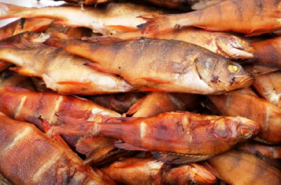

Продукция РК им.Котовского
(Цены на продукцию действуют с 01 января 2018 года)
Терпуг тихоокеанский

Терпуг тихоокеанский холодного копчения
Цена: 480 руб./кг.
(Цены на продукцию действуют с 01 января 2018 года)
Терпуг тихоокеанский холодного копчения
Цена: 480 руб./кг.
Те́рпуг — морская лучепёрая рыба, принадлежащая к отряду скорпенообразных. В пределах отряда создает подотряд Терпуговидных. Это донная стайная рыба, заселяющая прибрежные воды и зоны континентального шельфа. Стаи рыб размещаются приблизительно на глубине 200м. Терпуг небольшая по размерам рыба (средняя длина достигает 50 см., максимальный вес - 2,5 кг.).
В семействе терпуговых выделяют от 3 до 7 родов и 12—14 видов, а также подвиды. Виды и подвиды имеют индивидуальные морфологические особенности. Чаще всего встречаются такие подвиды как: однолинейный, бурый, зайцеголовый, бровастый, японский, пятнистый.
Терпуг всеяден. Даже во время нереста продолжает активно питаться. Основу рациона составляют различные ракообразные, мелкая рыбешка и моллюски. Терпуг не брезгует и отходами рыбной промышленности, как и икрой других рыб. Кстати, именно икра является основной частью рациона терпуга.
Калорийность терпуга составляет 101.8 ккал и колеблется в зависимости от приготовления. Мясо легко усваивается и питает организм человека. Химический состав составляют витамины (С, А, В1, Е, В2, В6, PP, В9, В12, D), минералы (S, P, Mg, Co, Se, F, Ca, Cu, Cr, K, Fe), жирные кислоты Омега-6, Омега-3. Также в мясе терпуга присутствует йод, холин, фолиевая кислота, и прочие ценные составляющие.
Энергетическая ценность продукта (Соотношение белков, жиров, углеводов): Белки: 17,8г. (71,2 кКал); Жиры: 3,4г. (30,6 кКал); Углеводы: 0г. (0 кКал). Энергетическое соотношение (белки/жиры/углеводы): 69%/30%/0%
Мясо терпуга источник аминокислот и белка. Употребление его в пищу способствует предупреждению возникновения атеросклеротических бляшек на сосудах, стабилизирует сердечно-сосудистую систему. Положительно сказывается на нервной системе, улучшает интеллектуальную, умственную деятельность. При нарушениях функции щитовидной железы, является ценнейшим источником йода. Благодаря средним показателям калорийности мясо рыбы следует употреблять людям, следящим за весом. Способствует понижению уровня холестерина в крови. Доказано положительное воздействие на зрение человека.
На рынок России поступает терпуг, вылавливаемый с дальневосточных морей. На торговые точки рыбу привозят либо замороженной (стейк, филе, тушка), либо копченой. Поблизости с местами вылова — ее реализуют охлажденной. При выборе терпуга следует обратить внимание на внешний вид (тушка цельная без повреждений и трещин), на упругость поверхности (пружинистая, без вмятин), на жабры и запах (жабры чистые, сохраняющие запах моря).